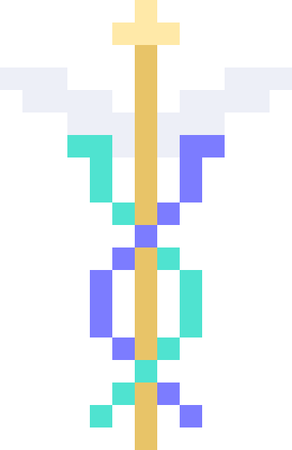

A fast, local-first command centre for your Mac.
Install
Pick one path — Caduceus only, the full local stack (app + Ollama + Hermes Agent + models), or the .dmg.
Option 1 — Caduceus only
Best for getting started fast — palette, launcher, clipboard, dictation, and web search in about ten seconds. Add AI whenever you are ready.
$ curl -fsSL https://vivaanshahani.com/caduceus/install.sh | bash
Option 2 — Full local stack
Best for
using / and /c with local models and zero follow-up wiring — Ollama,
Hermes, and Caduceus settings are configured for you.
One idempotent command: Caduceus,
Ollama,
Hermes Agent,
model pulls, / on http://localhost:11434/v1, and
/c via Hermes computer_use. Untick what you already have;
model pulls require Ollama (see
Ollama docs
and
Hermes Agent on GitHub
if you prefer to install by hand).
Do not worry if you picked option 1 first — you can run this same command later;
it skips what is already installed and only fills in AI pieces.
$
Would rather use your own AI CLI or cloud API? Learn how to configure that with Caduceus.
Option 3 — Download the .dmg
Best for
downloading the app file yourself — corporate policies, offline transfer, or if you prefer not to
pipe a script into bash.
Get the latest .dmg — one universal build, Apple Silicon and Intel. Drag Caduceus to Applications, then run this once. Caduceus is not signed with an Apple Developer certificate yet, so macOS quarantines it until you trust it. Options 1 and 2 run this for you.
xattr -dr com.apple.quarantine /Applications/Caduceus.app
Would rather compile it? Add --from-source to the command in option 1 and the
installer builds it on your Mac instead — it fetches Rust and Node and takes a few minutes.
One bar. Control + Space from anywhere.
| figma | Launches Figma. Every app on your Mac is searchable. |
| 1920/16*9 | Shows 1,080. Enter copies it. |
| 18% of 240 | Shows 43.2. |
| flights to lisbon | Searches the web, in whichever engine you set. |
| / explain OAuth | Asks your AI agent. |
| /c find the invoice in my email | Hands the task to an agent that can drive your Mac. |
| /v invoice | Searches everything you have copied. |
All of it works offline, with no account and no API key.
Sits above everything. Hover for six shortcuts, click for the palette, drag it wherever. Click-through the rest of the time, so it never steals a click.
Fuzzy-search every application you have installed and open it with Enter. No configuration.
Real arithmetic in the search bar — precedence, percentages, functions, constants. Enter copies the answer.
Text, images and files, searchable and pinnable. Skips whatever your password manager marks as secret. Optional encryption at rest.
Hold Alt+Shift+V, talk, let go. Live words appear in the Command Center while you speak, transcribed on-device by Apple's speech engine — no wake word, no cloud.
Capture the display to the clipboard (and Downloads), or open Apple's Screenshot app to record with mic and/or system audio.
Powered by Hermes Agent. It can read your screen and drive your mouse — but only after you approve it, every single time.
Caduceus does not ship its own model or its own agent loop. It drives Hermes Agent, the open-source agent from Nous Research — which already does model routing, tool calling, memory and screen control properly.
$ curl -fsSL https://hermes-agent.nousresearch.com/install.sh | bash && hermes setup --portal
/ and /c prefixes need it. Hermes runs
whatever model you point it at, including a local one.
No account, no API key, no subscription — for anything that ships in the app.
Caduceus leans on tools macOS already has: sips for images,
mdfind for file search, caffeinate to stay awake,
diskutil to eject disks, the built-in Dictionary, Apple's on-device
speech recogniser for dictation. Nothing here phones a paid service, and no built-in
feature is gated behind a plan.
Some things people ask for cannot be free, so they are deliberately not built rather than half-built:
| Google Translate | The Cloud Translation API bills per character. The free endpoint is undocumented and against Google's terms. |
| Authy | No public API, and the desktop apps were discontinued in 2024. A built-in TOTP generator you paste your own seed into is the honest version. |
| Jira, Linear | The APIs are free to call; the products are not, for any real team. Better as extensions. |
| Bluetooth control, video download, keyboard brightness | Free, but need a tool you install yourself (blueutil, yt-dlp) or a private API Apple keeps breaking. |
The full triage — what shipped, what is queued, what costs money, and what is genuinely impossible — is in FEATURES.md.
A folder, a manifest, and a script. No build step.
An extension adds commands to the Command Center. It declares what it is allowed to touch up front, so you can read what it can do before you run it — there is no ambient filesystem, no shell, and no network unless the manifest asks for it.
my-extension/ caduceus.json # id, commands, permissions main.js # export one function per command icon.png # optional
Drop the folder in
~/Library/Application Support/com.caduceus.desktop/extensions/
and it shows up in the palette. No store, no signing, no review.